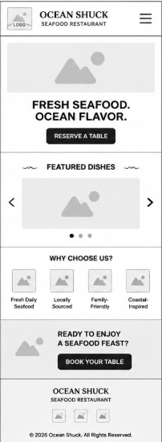
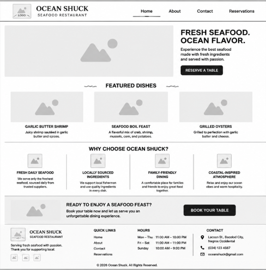

Site Name:
Ocean Shuck is a popular seafood boil located in Bacolod, Philippines, known for serving fresh and flavorful seafood dishes. Ocean Shuck has earned a reputation as the go-to spot for seafood lovers in Bacolod, offering a unique blend of local and international flavors with a focus on quality and sustainability.
Site Purpose:
Ocean Shuck's website serves as a digital storefront that showcases its seafood menu, restaurant atmosphere, promotions, and customer services. The site aims to attract both local diners and tourists by providing easy access to menu information, reservation options, operating hours, and contact details.
Scenarios:
-
What seafood specialties are most popular at Ocean Shuck?
-
Can I make a reservation online?
-
Does Ocean Shuck offer delivery, takeout, or catering services?
Color Schema:
-
Beige: #F8F4E3 - backgrounds.
-
Dark Slate: #264653 - text.
-
Seafoam Green: #2A9D8F - nav background.
-
Deep Ocean Blue: #023E8A - header background
Typography:
-
Header Title Font: Playfair Display, serif
-
Sub-Headings Font: Kalam
-
Body text font: Poppins, sans-serif
Wireframes:
Wireframe for Mobile View

Wireframe for Desktop View
